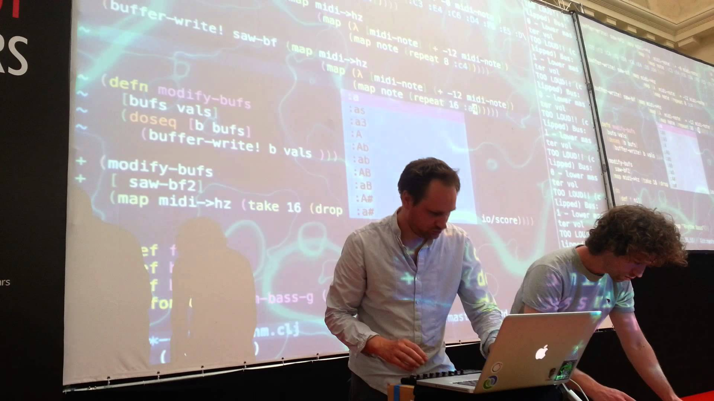
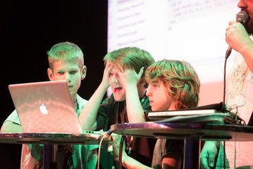
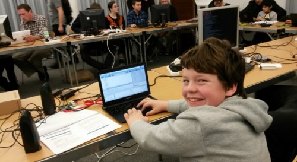
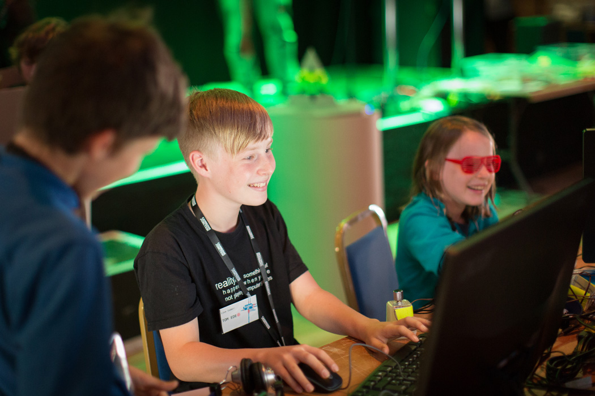
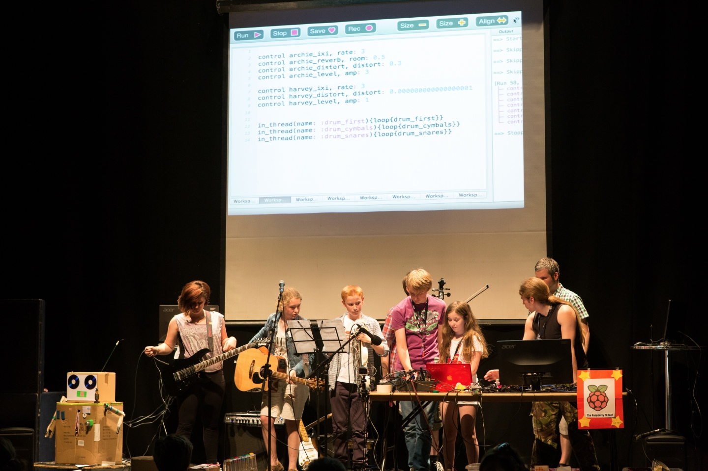
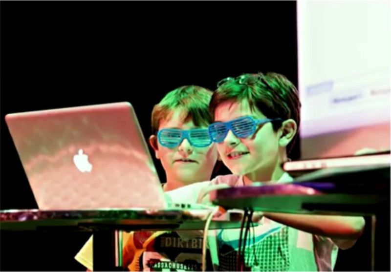
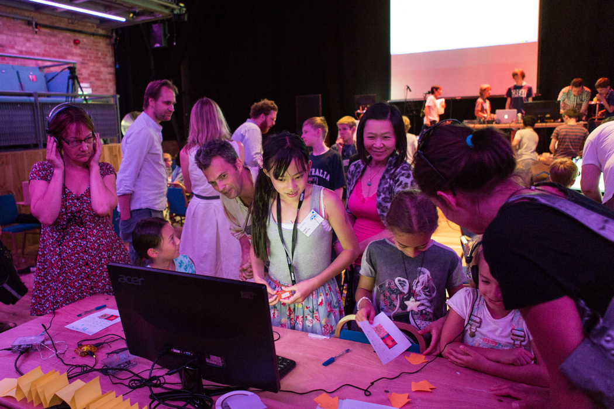

Sonic Pi: (Live) Code Music (in Ruby!)
Nicolas Dermine / @nicoder
Wroc_love.rb - March 14th, 2015
Pi day
Pi
π
3.141592
3.14 1592
3.14 15.92
3.14 16.00
3.14 16:00
Sonic Pi
- a (brief) history
- why you might want to use it
- how to get started
Part I
the story
Carin Meier
Sam Aaron
Sam Aaron: Live Coder
Sam Aaron: Live Coder

Raspberry Pi
Raspberry Pi

what if?

Sonic Pi
 Part II
4 reasons why you may want to use Sonic Pi
1. have fun!
2. create music
3. learn
4. teach
Part III
the code

Play notes
play 60 # or `play :C4`
Play chords
play :c
play :e
play :g
or
play chord(:c, :major)
Play melodies
play :c
sleep 1
play :e
sleep 0.25
play :g
or
play_pattern_timed [:c, :e, :g], [1, 0.25]
use Ruby control flow
3.times do
play :c
sleep 1
end
change sounds by using synths
(and tweaking their params)
use_synth :mod_fm
3.times do
play :c, mod_range: 12
sleep 1
end
add effects to the sound
(and tweak their params)
with_fx :echo do
3.times do
play :c
sleep 1
end
end
use samples
(and play with their rate)
loop do
sample :loop_amen
sleep sample_duration :loop_amen
end
live code
live_loop :first_loop do
sample :loop_amen
sleep sample_duration :loop_amen
end
live_loop :second_loop do
sync :first_loop
sample :bass_dnb_f
end
how to get started
- tutorial
- examples
- screencasts
- language reference
- share
thank you!